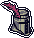

jacksons cool web page guestbook
here you can just click on the little boxes and put in ur name ! And also a message you want to leave and then hit the Submit button and it will appear on this page for everybody else to see! you can leave any message you want or even ur e mail adress so i can get back to you or also your home addres and i will pay you a visit while you are sleeping
big boy alert!! Important
guys neocities does not support any backend stuff and the web site i host the messages for this on died or is down or something ? it just says 503 bad gateway dont know what that means. if anybody has information on the status of jsonstores.com please let me know but not through this guestbook because it does not currently work.
how many of yall played super cat tales? doesn't sound like a real game but i swear it is had it on like a second gen ipad mini or smth. the first one is pretty Baller but its the prequel sct2 that goes absolutely Insaneo Style and thats on god. i recommend you play through 1 in its entirety before even getting past the first act of 2 because it hits harder that way.
i also highly recommend you to play both before you continue reading this review and analysis. the franchise is a watered-down mobile platformer through and through - its sort of like that series... mario? was it called? but with a twist: the controls are clunkier! and you should start the games with that mindset and only continue because of the charming and surprisingly competent pixel art. again, it will hit harder that way.
now, of course, is the part where i will summarize the Story (because this mobile game does indeed have one) and as i have done absolutely zero research prior to writing this, i will do it completely from memory. Basically, the main character alex notices a mysterious robotic invading force flying into town and is promptly captured after trying to investigate. here he meets the fellow prisoner-of-war sergeant mf-ing mcmeow and aids in their daring escape by hijacking a tank and fucking shit up in the flying aircraft carrier theyre trapped in. alex is now in on the rag-tag guerrilla offensive taking back the country. they get the key to the currently inoperational power plant from the town mayor and find themselves raiding what has been converted into the tin army's base of operations, manage to catch a ride to the next area with shinji, who runs a ferry, end up marooned in the water stage which culminates in an attack on the soldiers' ship, strike a deal with the big boy of the desert zone get into a pyramid, then fight through a snowy, mountainous zone until reaching this big castle town and this is where shit gets real. this big boy knight pops up to demand back some key the gang needs, and when mcmeow refuses, triggers a flashback to shortly after his own battallion was defeated, detailing how he saw mcmeow ABANDON his squad after both olli and pascal were GRAVELY INJURED by a tin army general. mcmeow hoofs it and this kallio guy says luna, the special chosen cat who can save everyone from the vaguely-defined world-ending catastrophe wrought by the tin army's control of the vaguely-defined world-ending magic crystal likely didn't survive. all hope is lost. but out of desperation alex and the gang continue, making it through an eerie cave level without mcmeow, take out a high-ranking tin official, only to find out that, in defeat, he is going to BLOW HIMSELF UP along with everyone else obviously and it's painfully clear they're all DEAD until MCMEOW reappears to JUMP on this metaphorical GRENADE saving everyone from the blast and the gang narrowly escapes the cave while the entire MOUNTAIN they're under CRUMBLES from the shock of the NUCLEAR explosion. if finding out the best character in the game is a legitmate TRAITOR was a gut punch, then seeing that same character SACRIFICE his life for the gang he didn't even have time to reconcile with knocked every got damn tooth out of my gaping jaw. mind you this was something of a weird time in my life but that shit had me honest to god fucked up for a couple of days and i still think about it sometimes. why did this happen in a mobile game about cats otherwise fully and sincerely committed to a cute and lighthearted tone? idk man but this page is To Be Continued.
ok fellas part 2. basically after this point the game opens up a little while everything ramps up to the final act. this mystical elevator thingy takes them into the fucking dragon aerie and shit derails from the canonical platformer world progression and gets way more surreal. there's this isolated sky town that runs off wind power and apparently has wacky technology. this is where you find out olli and pascal LIVED but are in a COMA and you can do a questline where you retrieve this special fruit the medical team needs to revive them. massive w but ollie n pascal obv totally disillusioned with p.a.w.s. after what happened and its such a melancholy moment chilling at the edge of this lonely, faraway city while the rest of the world is being razed, questioning ur loyalties and responsibilities...
anyways if ur like me, this is the point where you finally get brutus and amy on board, and before you get back down to the mainland to follow through with mcmeows orders to reach the water temple, olli changes his mind and joins the team, making it through the jungle world where they kick lord iridiums ass. but after escaping to the lava world they find out that this pirate dude captain lace has seized control of the tin army following iridiums presumed demise because of course he has, except both parties really have a much bigger problem which is that iridium was totally possessed by this formless, eldritch physical manifestation of evil, because of course he was, and that shit leakin out and eclipsing the sun like its lothric at the end of the age of fire and the whole final act has this unshakeable atmosphere of finality. they steal a plane and theres a fucking dogfight/turret gunner section where they fly into lace's ship and olli rigs the engine to explode while they escape on another plane. they then have to learn to communicate with the locals of the lava city to get access to this tunnel thats the only way to the capital, ultima. the whole crew's on board when rigs, another member of mcmeows special forces unit, BETRAYS them, SHOOTING UP the TRAIN they're on with an ATTACK HELICOPTER and then KIDNAPPING luna. the gang is in the big city now, searching n shit, and after they rescue her theres a chill level where they all stay at this hotel getting ready for the big finale which reminds me a lot of one other time this happened in a game and theres a ton of cutscenes and character moments in this segment, but you can find olli alone on the roof feeling pretty dejected n all that when a vision of mcmeow appears in the full moon for a second and i was just like... damn...
this was when i went back to finish up the quest with the secret scientist in the sky area who can build like a mecha-cat with the powers of every cat combined. then you go into the final area which is this wild level where reality is totally falling apart and being absorbed into gears and stuff and the platforming is pretty tough and then theres the final showdown with iridiums true form where you get to fly a plane again and fill him full of lead for real this time. and believe it or not, at the very end of the overworld screen, atop the corrupted, mechanical hellscape, sits a bright yellow cat balloon, which all the surviving characters board before the credits roll - the exact same balloon that gets shot down by monkys as the intro to the comparatively low-stakes original cat tales.
theres a lot to unpack here and a lot to talk about. first i want to say that the art is much more than competent. it is actually quite gorgeous. it is certainly in the s tier of phone game graphics and likely computer graphics as a whole. it has a peculiar style of doubled outlines which is adhered to consistently. theres no antialiasing and absolutely no noise or texture within the sprites, only solid clusters. and the colors are really pretty, thats what stands out probably most to me. very vibrant with tons of contrast and really good hues. there are no boring grays or generally flat looking colors in this game because all of the outlines and shading are hue shifted with blues and purples. the color palettes are very well done and super atmospheric which makes even really simple and minimal areas a joy to look at. overall its just a really clean look and it fits the game perfectly. both sct games are rendered pixel-perfect too which is honestly more than most "pixel art" mobile games can say. the sct dev has made several spinoffs and unique ips which despite their much smaller scale are held to nowhere near the standard of graphical quality of sct which is a small shame. i forgot to mention the fantastic uis and hi-bit character art in the intro cinematic and +party member animations.
you wouldnt believe it but this game has some low key bangers on the soundtrack (corrupted domain all the way dude) [mcmeows theme has an official metal version] its chiptune but not the annoying and overdone eight bit kind, its got these amazingly crunchy soundfonts and instrument samples combined with the usual noise percussion, sine wave basslines, etc. the whole ost got its own identity to it that matches the game so well. its really fantastic
Name:
Your Message: